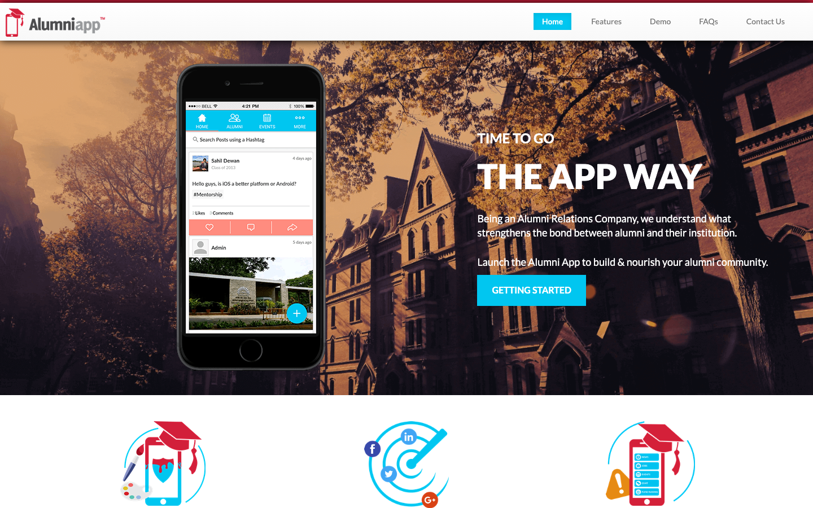
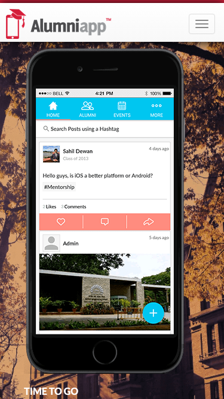

35/100 · strong_redesign · 行业：roofing · 地区：Gold Coast · Google 评价：4.7★ （0 条）
投入分级： C 批量轻触 — 模板邮件 + 报告
PDF 链接，无主动跟进
触发依据： - C · strong_redesign · audit 35 · 0 评论 4.7★ (未达 B 标准)
下一步行动： 标准模板邮件 + master.md PDF 链接，无主动跟进。等客户回复触发后再投入。
线索来源 · 联系开场可用: - 来源:
Google Maps (gosom 抓取) - 搜索关键词:
roofing in gold-coast - 首次发现:
2026-05-14 - Batch:
pipe-roofing-gold-coast-202605150724
审计结论： audit_score=35 → strong_redesign · weakest: content 10, gbp 20 · fired: no_https · 2 critical issues
已触发的 hard triggers： no_https
independent_http_site

慢速 4G 加载实景视频（1.6 Mbps · 150ms 延迟 · 4× CPU 节流，模拟真实手机访客的体验）：
The screenshots show an unrelated alumni app landing page, so a roofing customer would not understand or trust that this is a Gold Coast roof repair business.
新鲜度 2/10 · 信任度 1/10 ·
转化准备度 1/10 · 设计年代
severely_outdated
值得保留的优点： - The desktop header is uncluttered and easy to scan. - The CTA button colour stands out clearly against the dark hero background. - The mobile layout has a simple top bar with space for a stronger phone action.
技术事实
http only
普通话翻译
你的网站没有 HTTPS — 浏览器会在地址栏显示「不安全」标记，部分浏览器（Chrome / Firefox）甚至会弹出全屏警告挡住页面。
对客户的影响
Google 早在 2018 年起把 HTTPS 列为搜索排名因素，没有 HTTPS 直接拉低自然搜索可见度；且超过 80% 的访客看到「不安全」标识会立刻关掉。对你这种 0 条 Google 评价积累起来的口碑来说，访客在网址栏就被劝退，等于浪费了所有 GBP 流量。
技术事实
phone hidden below fold or missing
普通话翻译
电话号码在第一屏看不到 — 客户必须滚动才能找到怎么联系你。
对客户的影响
本地服务客户 60-70% 倾向打电话沟通（不是填表单）。电话号没在第一屏 = 这部分客户里很多人会直接关掉去搜下一家。这是最便宜的转化优化之一。
技术事实
The top-left logo says “Alumniapp” with a graduation cap icon, and the hero headline says “THE APP WAY” instead of anything about roof repairs.
普通话翻译
这个页面看起来像校友手机 App 的网站，不像修屋顶公司的官网。
对客户的影响
客户从 Google 商家资料点进来后，通常几秒内判断是不是找对了地方；如果第一眼不像修屋顶公司，很可能直接返回搜索结果，电话咨询会被白白流失。
正确长啥样
A roofing site should show the business name, roof repair wording, and Gold Coast location in the first screen, with a visible phone number and service-focused headline.
Redesign 怎么改
Replace the Alumniapp branding and app headline with “Roof Repair Gold Coast”, a roof repair headline, Gold Coast service-area text, and a prominent click-to-call button.
技术事实
The main desktop hero uses a campus-style building background and a large smartphone mockup showing an alumni social feed.
普通话翻译
首页大图展示的是手机 App 和校园建筑，跟修屋顶完全没有关系。
对客户的影响
本地客户会用图片快速判断这家公司是否专业；图片不相关会让人怀疑网站是否真实，尤其是急着找人修漏水屋顶时更容易放弃。
正确长啥样
The hero should show a real roof, tradesperson on a roof, storm-damaged tiles, or a before-and-after repair image from the Gold Coast area.
Redesign 怎么改
Use a full-width roofing photo in the hero, remove the phone mockup, and overlay a short service promise such as emergency roof leak repairs with a phone CTA.
技术事实
The desktop header only shows navigation links like Home, Features, Demo, FAQs, and Contact Us; the mobile header only shows a hamburger menu with no phone button.
普通话翻译
客户一打开页面看不到电话号码，手机端还要点菜单才可能找到联系方式。
对客户的影响
很多本地搜索发生在手机上，约 70% 的本地搜索用户会直接拨打或访问商家；电话按钮不明显会把准备联系的人推给竞争对手。
正确长啥样
Desktop should show a top-right phone number button; mobile should show a sticky click-to-call button or phone icon visible without opening the menu.
Redesign 怎么改
Add a high-contrast “Call Now” button with the local phone number in the header and a sticky mobile call bar at the bottom of the screen.
技术事实
0 reviews
普通话翻译
你的 Google 评价数量低于同行平均水平。
对客户的影响
本地搜索排名信号之一就是评价数量；不光是分数，连”有多少条”都算。短期可以做的：每个完工的客户群发一条「点评一下吧」的 SMS。
技术事实
no tel: link
普通话翻译
电话号码不是 click-to-call 链接（手机上点击不会自动拨号）。
对客户的影响
移动客户必须复制号码再切到拨号界面再粘贴 —
每多一步操作就流失一批客户。修复成本只是把
<a href="tel:0712345678">
写对，但能立刻拉高电话转化率。
技术事实
title=‘## Still stuck on an Alumni Website?It’s time to go the APP’ contains-name=false contains-niche=false
普通话翻译
你网站的浏览器标签 title 没把业务名字 + 服务关键词写清楚（比如该写「Roof Repair Gold Coast - roofing Gold Coast」，但目前是泛泛一句）。
对客户的影响
Google 搜索结果里展示的就是这个 title。写不清楚 = 排名靠后 + 即使排上来客户也不知道是不是匹配的服务。SEO 最便宜的修复，但很多本地企业完全没做。
技术事实
0 service-related verbs detected
普通话翻译
网站文案里没有具体说清楚你做哪些服务（比如 metal roofing / tile restoration / gutter / skylight 等专项），只是泛泛说「我们做屋顶」。
对客户的影响
客户搜的是具体问题（「漏水维修」「屋顶翻新报价」），网站没有匹配的具体服务文字，搜索引擎匹配不上你 + 客户进来也判断不了你做不做他要的活儿。
技术事实
0 trust-keyword mentions
普通话翻译
网站上没有显眼地写出执照号 / ABN / 保险信息 / 从业年限 / 行业证书。
对客户的影响
澳洲 QLD 的屋顶服务必须有 QBCC 执照才能合法开工；客户在花几千几万块前一定会查这些。你网站上没标 = 客户要么打电话来问要么直接选下一家更透明的。
技术事实
4tags
普通话翻译
页面要么没有 H1 标题（搜索引擎无法理解页面主旨），要么有多个 H1（搜索引擎不知道哪个是主题）。
对客户的影响
H1 是搜索引擎判断页面主题最权威的信号。写错或缺失 = 关键词排名拉低；同一页面同样的内容，H1 写对的可以排到前 3 页，写不对的可能挂在第 7 页。
技术事实
no LocalBusiness JSON-LD
普通话翻译
网站没有 LocalBusiness JSON-LD 结构化数据（让 Google / AI 知道你是本地企业、地址、电话、营业时间的标准格式）。
对客户的影响
Google「附近的服务」「Knowledge Panel」「AI Overview」都依赖这类结构化数据。没有 = 即使排名上去也不会出现在右侧 Knowledge Panel 或地图卡片里 — 错失高转化的展示位。AI agent / ChatGPT 引用本地商家时也是基于这些数据。
技术事实
The navigation labels are “Features”, “Demo”, “FAQs”, and “Contact Us”, which match a software product layout rather than roofing services.
普通话翻译
菜单内容像软件产品网站，不像屋顶维修公司的服务菜单。
对客户的影响
客户找不到自己需要的服务，会以为这家公司不做相关工作；通常用户不会耐心研究，而是回到 Google 选择下一个商家。
正确长啥样
Navigation should include practical service paths such as Roof Leak Repairs, Tile Roof Repairs, Storm Damage, About, Reviews, and Contact.
Redesign 怎么改
Rewrite the navigation around roofing services and local intent, keeping the menu short and prioritising emergency repair and contact actions.
技术事实
On mobile, the large smartphone mockup fills almost the entire first screen, and only the small text “TIME TO GO” appears at the bottom edge.
普通话翻译
手机端首屏几乎全被手机模型占满，客户看不到修屋顶信息和联系按钮。
对客户的影响
手机用户通常在 8 秒左右决定是否继续看；首屏没有说明业务和电话，会直接减少来自 Google 商家资料的来电。
正确长啥样
Mobile should lead with a compact roof repair headline, one supporting line, and two large tap targets: Call Now and Request Quote.
Redesign 怎么改
Remove the oversized mockup on mobile and rebuild the first screen as a single-column roofing hero with headline, trust line, service area, and sticky call CTA.
技术事实
The visible area contains no reviews, licence details, years in business, local suburb coverage, warranty message, or emergency availability.
普通话翻译
页面上看不到评价、资质、保修、本地服务范围等让客户放心的信息。
对客户的影响
修屋顶客单价高，客户更怕被骗或做坏；缺少信任证明会让本来愿意询价的人转去选择看起来更可靠的同行。
正确长啥样
The first screen should include concise proof such as star rating, licensed and insured wording, Gold Coast suburbs served, workmanship warranty, and emergency response availability.
Redesign 怎么改
Add a trust strip directly under the hero CTA with review rating, licence or insurance claim, warranty, and Gold Coast coverage badges.
技术事实
The hero uses a dark orange photo overlay, large all-caps white headline, bright cyan buttons, and stock-style illustrated icons below the fold.
普通话翻译
整体视觉像旧模板网站，颜色和图标都不像专业的本地服务公司。
对客户的影响
网站看起来过时会让客户怀疑公司是否还在认真经营；这种不信任会降低询价和来电，尤其影响第一次接触的新客户。
正确长啥样
A current local service design should use real job photos, restrained colours, clear spacing, readable service cards, and one strong action colour for calls and quote requests.
Redesign 怎么改
Replace the app-template styling with a roofing-specific visual system: real roof imagery, dark charcoal text, white sections, one accent colour for CTAs, and practical service blocks.
我们前面那段「慢速 4G 加载视频」是我们这边的实验室结果。这一段是 Google 自己对你网站打的分，包括过去 28 天 真实访客的网络体验数据（CRUX field data）。
Lighthouse 分数（实验室）：
| 维度 | 分数 |
|---|---|
| 性能 (Performance) | 47/100 |
| 可访问性 (Accessibility) | 73/100 |
| 最佳实践 (Best Practices) | 70/100 |
| SEO | 83/100 |
Lab 关键指标： LCP 10.0s · FCP
2.3s · CLS 0.506 · TBT 138ms
Google 建议的优化项（按节省时间排序，前 2）：
Lighthouse 分数： Performance 83 · A11y 80 · Best Practices 74 · SEO 83
PSI 给的是宏观分数，下面是具体可改的两块：图片格式与 tracker 脚本。
总评： 基本未优化 — redesign 可显著降低图片下载量
具体问题： - [major] 46 张图几乎全是 JPG/PNG，未用 WebP/AVIF — 估算可节省 30-50% 图片下载量 - [minor] 46/46 张图无响应式 srcset — 移动端浪费带宽 - [minor] 46/46 张图未 lazy load — 首屏外的图阻塞主线程 - [major] 27/46 张图缺 alt 文字 — 影响 SEO + 可访问性 + AI 抓取 - [minor] 43/46 张图无显式 width/height — 加重 CLS 布局抖动
已识别的 tracker：
| 工具 | 类型 | 请求数 | 字节 |
|---|---|---|---|
| Google Tag Manager | analytics | 1 | 146.7 KB |
| Google Analytics | analytics | 4 | 20.3 KB |
观察： 5 个 tracker 合计加载了 167 KB —— 这些都是阻塞主线程的脚本，是性能 + 隐私双角度的销售切入点。redesign 时可以建议清理不再使用的 tracker。
客户最常担心的问题：「我重做网站，会不会丢掉 Google 排名？」这一段直接回答。
http://roofrepairgoldcoast.com/sitemap.xml页面分类：
| 类型 | 数量 |
|---|---|
| 顶层页面 | 2 |
| FAQ | 2 |
| 首页 | 1 |
| 联系 / 报价 | 1 |
Redirect 计划承诺： redesign 上线时我们会附一份 6 条 1:1 redirect 表（旧 URL → 新 URL），保证 Google 已经索引的页面权重无损迁移。已经在 Google 第一二页的关键词不会丢。
长尾覆盖： 无 — 没有服务专项页面，redesign 时是关键补点
客户能不能 方便地 把信息留下来 =
直接的转化路径。这一段审视所有 <form> 元素的可用性 +
防 spam 配置。
未检测到任何 anti-spam 措施（reCAPTCHA / hCaptcha / Turnstile / honeypot 都没有）— 表单极容易被自动机器人灌爆，垃圾询盘会让客户对真实询盘麻木。redesign 时建议加 Cloudflare Turnstile（不可见，免费）。
Audit 总结：
none (全无配置 —
邮件营销 / cold outreach 几乎不可能投递成功)这是后续 「Social Media Management 月度包」 或 「Cold Outreach 启动包」 的前置条件 —— 邮件 DNS 没修好，发出去的邮件全进垃圾箱。redesign 时一并处理。
从网站源码识别出来的工具，能帮我们判断这位客户的数字成熟度。
数字成熟度打分： 1 / 6 （低 — 客户对网站的认知是「有就行」，需要先讲清楚一份能赚钱的网站长什么样）
客户可能有数月 / 数年的历史数据 + 广告投放受众 sit 在这些 ID 上面。重做时必须用同一套 ID 重新接进新网站，否则等于清零所有累积。
我们 redesign 交付清单会把这些列为「必须 setup 项」。
关键发现：客户网站还装着 Universal Analytics，这套工具 Google 已于 2023 年 7 月停止收集数据。也就是说，他们至少 2 年没有看过任何真实的网站访客数据。这是销售切入的强角度。
本地服务的客户在掏钱之前会查这些凭证。缺失 = 客户跳到下一家。
信任分： 0/100
客户网站缺少 3 个法律 / 行业要求的信任凭证：QBCC 执照号、ABN、工伤 / WHS 合规。QLD 屋顶服务由 QBCC 监管，客户在花钱前会查这些；缺失等于直接给同行让单。
GEO = Generative Engine Optimization。ChatGPT、Perplexity、Google AI Overviews 这些 AI 搜索产品不像传统搜索引擎那样按”关键词排名”工作，它们直接抓取结构化数据并把答案合成给用户。如果你的网站在 AI 抓取这一块做得不到位，等于在生成式搜索时代隐身。
AI 可发现性总分： 0 / 100 — AI agent / ChatGPT 几乎无法准确引用此网站 — 在生成式搜索时代等于隐身
llms_txt_present (5 分) — no /llms.txt at
standard pathai_bot_robots_policy (5 分) — robots.txt has no
explicit policy for AI crawlers (GPTBot/ClaudeBot/etc)localbusiness_schema (15 分) — no LocalBusiness
or Organization JSON-LDservice_schema (10 分) — no Service JSON-LDfaqpage_schema (10 分) — no FAQPage JSON-LD
(loses AI Overview / featured snippet eligibility)aggregaterating_schema (5 分) — no
AggregateRating JSON-LD (★ rating not shown in search snippets)breadcrumb_schema (5 分) — no BreadcrumbList
JSON-LDsemantic_landmarks (10 分) — 2 semantic
landmarks present: <nav, <footerfaq_qa_pattern (10 分) — 0 question-style
heading(s) found (Q&A format helps AI extraction)eeat_business_credentials (10 分) — only 0/4
credentials found — need ≥2 of: ABN, license/QBCC, years-in-business,
insuranceeeat_warranty_trust (5 分) — no
warranty/guarantee in copyjsonld_at_least_one (10 分) — 0 JSON-LD block(s)
detected on page销售切入： 「ChatGPT 现在每月 30 亿次搜索，本地服务用户问『Brisbane 哪家屋顶公司靠谱』，AI 回答时只引用结构化数据完整的网站。你目前在这个新阵地的得分是 0/100。」
注：这一段只给运营内部看，不进入客户报告。 用来判断这个 lead 是不是匹配我们「小网站 / 多批量 / 快上线」的产品定位。
small —
小型，符合我们标准产品包定位报价以上方 建议报价 为准（来自 entity.grade.recommended_pricing / PRODUCT_TIER_TABLE）。本段只用来判断 lead 是否匹配产品定位，不竞争报价。
触发依据： - 已部署 2 个追踪工具
redesign 是一次性收入。以下是基于这个客户当前现状自动识别的持续性服务包机会，可以在 redesign 提案签字时一并捆绑进去。
触发依据： 网站上没检测到任何社交媒体链接 — 连基础的多渠道触点都缺。
包内容： 一次性：FB / IG 商家档案 setup + 品牌头像/封面 + 内容模板 5 套 (3-5K 一次性)。月度：4 帖 + 评论管理 + 月度报表。
月度费用区间： $1,500 setup + $600-900/月
销售切入： 「Google Maps 流量进来后没有第二落点，意味着客户当下没决定就走了 — 没办法再触及。社交账号是免费的二次触达管道。」
触发依据： 网站没有 blog 板块 — 没有内容营销基础设施，长尾 SEO 流量为零。
包内容： 每月 2 篇 SEO-optimized blog（800-1,200 字）+ 每季度 1 篇 case study（含 before/after 图）+ 关键词研究报告。
月度费用区间： $400-800/月
销售切入： 「ChatGPT 时代搜索引擎更偏爱有「专家深度内容」的网站。你目前的网站只有服务介绍页 — AI 可引用的素材几乎为零。」
-2026-05-11-v1codex_cliGoogle Places · most_relevant (max 5)